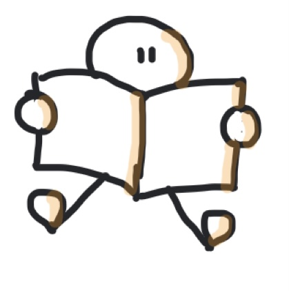

INTRODUCTION
Ceci est ma Deuxième Séance.
Il s’agit dans cette séance de s'entraîner à la technique de la chaîne pour retenir des listes.
2 choses sont importantes ici :
- Si la liste doit être retenue dans l'ordre, la 2ème clef (l'association) sera très importante si vous voulez retrouver l'ordre !
- Il faut être malin : il est souvent beaucoup plus facile de retenir quelque chose qui va symboliser, représenter le mot que l'on veut
retenir plutôt que le mot lui-même.
UN EXEMPLE EN HISTOIRE-GÉOGRAPHIE
Rappelez-vous qu'il faut rendre l’information « mémorable » grâce
à notre imagination. Par exemple, les États-Unis me font penser à "Statue de la Liberté", Chine à un Dragon, le Japon à un Samouraï,
la Suisse à un "petit suisse", etc...À vous de trouver une image forte qui vous fera penser immédiatement au pays à retenir.
Ensuite, puisqu'il faut les retenir dans l'ordre, il faudra IMPÉRATIVEMENT faire des associations,
des liens entre vos images : il faut qu'elles interagissent l'une avec l'autre !
UN EXEMPLE EN PHYSIQUE-CHIMIE
Ici encore, il s'agira de retenir une liste dans l'ordre. Il faudra donc faire des associations,
des liens entre vos images. On veut mémoriser les 20 atomes qui figurent dans ce tableau très connu en Chimie :

Rappelez-vous qu'il faut rendre l’information « mémorable » grâce
a notre imagination. Le 1er est donc l'Hydrogène qui me fait penser à "hydro" donc à "eau"...d'où la bouteille d'eau minérale.
Le 1er est l'Hélium et on gonfle les ballons dirigeables à l'Hélium. Carbone fait penser à "Carbonara", la verrue se traite
avec de...l'Azote liquide, le dentifrice contient du Fluor, etc... Vous pouvez aussi trouver votre image forte qui vous fera penser
au nom à retenir. Vous pouvez aussi jouer sur la sonorité ("Carbonara" sonne presque comme "Carbone", par exemple...)
UN EXEMPLE EN FRANÇAIS
Cette fois, l'ordre n'a pas d'importance ! Donc, ce sera plus facile car on peut commencer par le mot que l'on veut et les mettre dans
l'ordre qui nous arrange : à vous de voir dans quel ordre les mots vous inspirent...De plus, il vous faut commencer par un exemple qui
vous permettra de vous rappeler que ce sont des pluriels en "aux" : le mot travail semble être un choix tout indiqué !

La plupart des noms en -ail font leur pluriel en -ails
Exemple : un rail / des rails
Sauf les noms :
bail - corail - émail - soupirail - travail - ventail - vitrail - gemmail - fermail
qui font leur pluriel en "-aux".
Exemple : un travail / des travaux
Essayez de mémoriser la liste de ces 9 exceptions à l'aide de la technique de la chaîne.